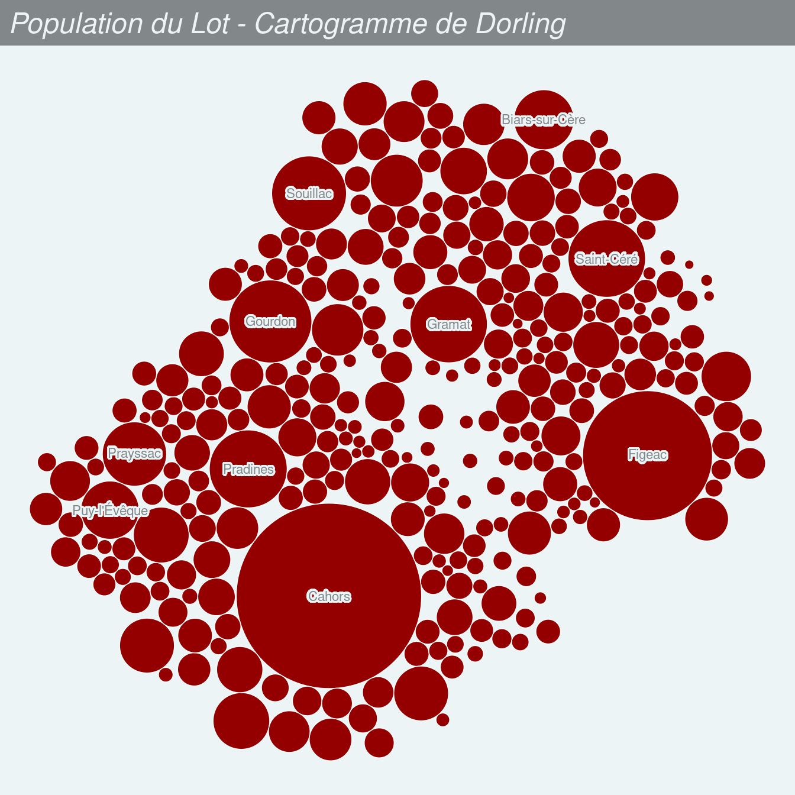
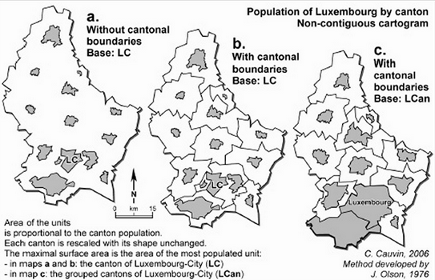
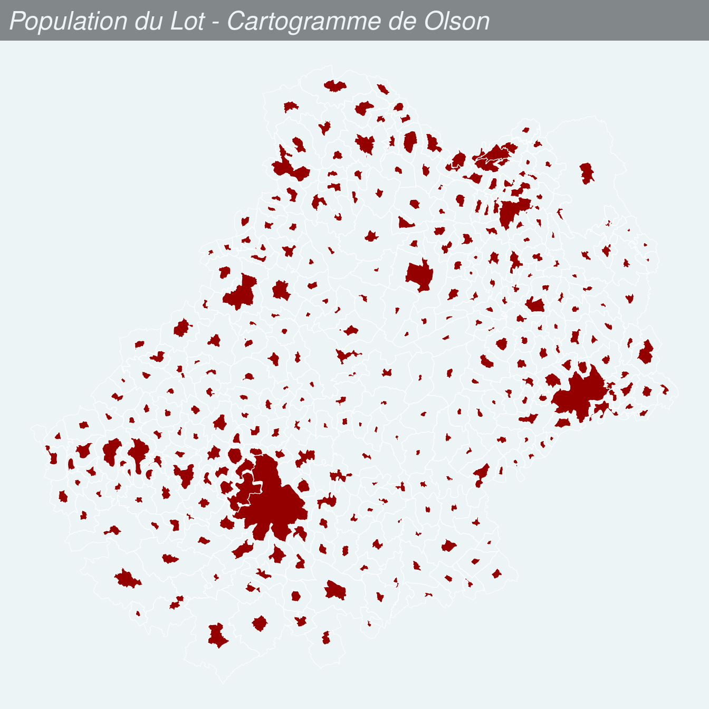
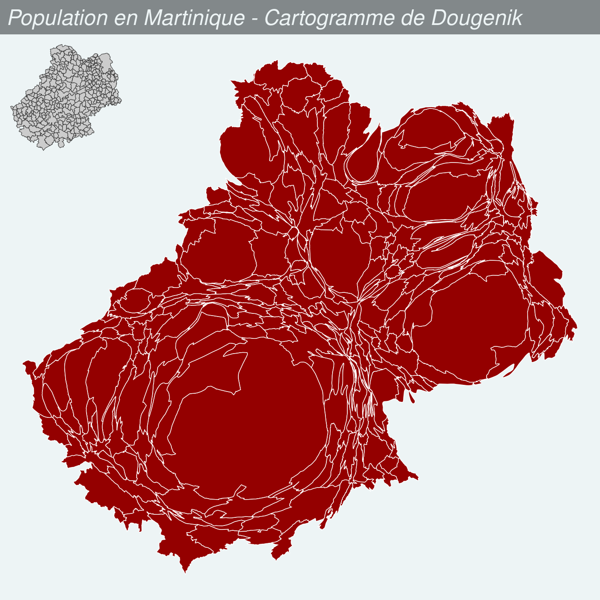

Chapitre 5 Les transformations cartographiques
L’anamorphose classique est une représentation des États (ou de mailles quelconques) par des rectangles ou des polygones quelconques en fonction d’une quantité qui leur est rattaché. (…) On s’efforce de garder l’arrangement général des mailles ou la silhouette du continent.”
Brunet et al. (1993)
3 types d’anamorphoses ou cartogrammes sont ici présentés :
- Les cartogrammes de Dorling (Dorling, 1996)
- Les cartogrammes non contigus (Olson, 1976)
- Les cartogrammes contigus (Dougenik et al., 1985)
Pour réaliser les cartogrammes nous utilisons le package cartogram (Jeworutzki, 2018).
5.1 Les cartogrammes de Dorling
Les territoires sont représentés par des figurés (cercles, des carrés ou des rectangles) ne se recouvrant pas dont les surfaces sont proportionnelles à une variable. Les positions des figurés sont définies selon les positions de départ.
On peut nommer les cercles pour se repérer et/ou s’aider de la couleur pour faire apparaître des clusters et mieux identifier les blocs géographiques.
library(mapsf)
library(cartogram)
com <- st_read("data/lot46.gpkg", layer = "commune", quiet = TRUE)
com_dorling <- cartogram_dorling(x = com, weight = "POPULATION", k = 7)
mf_map(com_dorling, col = "#940000", border= "white")
mf_label(
x = com_dorling[order(com_dorling$POPULATION, decreasing = TRUE), ][1:10,],
var = "NOM_COM",
overlap = FALSE, show.lines = FALSE,
halo = TRUE,
r = .15
)
mf_title("Population du Lot - Cartogramme de Dorling")
Le paramètre k permet de faire varier le facteur d’expansion des cercles.
5.2 Les cartogrammes non continus
La taille des polygones est proportionnelle à une variable. L’agencement des polygones les uns par rapport aux autres est conservée. La forme des polygones est ressemblante.
 (Cauvin et al., 2013)
com_ncont <- cartogram_ncont(x = com, weight = "POPULATION", k = 1.2)
mf_map(com, col = NA, border = "white", lwd = 0.5,)
mf_map(com_ncont, col = "#940000", border= "white", add = TRUE)
mf_title("Population du Lot - Cartogramme de Olson")
Le paramètre k permet de faire varier le facteur d’expansion des polygones.
5.3 Les cartogrammes continus
La taille des polygones est proportionnelle à une variable. L’agencement des polygones les uns par rapport aux autres est conservée. Pour conserver la contiguïté, la forme des polygones est fortement transformée.

com_cont <- cartogram_cont(x = com, weight = "POPULATION", prepare = "none")
mf_map(com_cont, col = "#940000", border= "white", add = FALSE)
mf_title("Population du Lot - Cartogramme de Dougenik")
mf_inset_on(com, cex = .2, pos = "topleft")
mf_map(com, lwd = .5)
mf_inset_off()
5.4 Forces et faiblesses des cartogrammes
Les cartogrammes sont des représentations cartographiques perçues comme innovantes (bien que la méthode date de 40 ans). Ces images très généralisées rendent bien compte des quantités et des gradients. Ce sont de vraies images de communication qui provoquent, suscitent l’intérêt, véhiculent un message fort, interpellent.
Mais les cartogrammes induisent une perte des repères visuels (difficile de retrouver son pays, ou sa région sur la carte), demandent un effort de lecture qui peut être important et ne permettent pas de gérer des données manquantes.